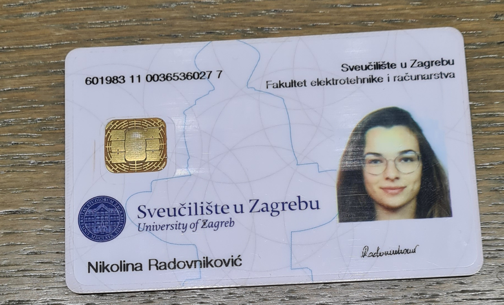

Izgubljena smeda/bež biljeznica u aleji laptopa
U A210 pronađena 2 miša. Vlasnici neka se jave s opisom/oznakom modela i bojom.
jel itko našao jučer punjač od laptopa u predvorju pokraj kopiraone?
u A101 prošli tjedan pronađena zelena puntarica (tehnička olovka ili kako vi to već krivo zovete), valjda ju vlasnik još traži, pa nek mi se javi
Je li netko vidio/sucajno uzeo bež torbu ostavljenu u ksetu sinoc na after MI partiju?
Jel netko našao crnu rukavicu danas ispred glavnog ulaza/na prolazu od glavnog ulaza prema D zgradi izmedu 13:00-13:05? Ako jeste pliz samo odnesite na portu ili u DM
Vishnjevac ostavio u dm-u kod miramarske na kasi, lp
prošli cetvrtak predvečer su mi u zenskom wcu kod B1 ili D1 ostala 3 zlatna prstena (bizuterija), ako je netko nasao neka se javi pliz 🙂
Nisam pronašao temu izgubljeno/nađeno. Ako netko poznaje kolegicu, recite joj da će iksica biti na porti 
elbarto pronašao temu izgubljeno/nađeno
Meta
Danas u B4 pronađena bijela Apple Pencil, ostavila sam je u referadi
MGJ hvala ti
Pita kolega munlajt iduce: “je li jucer navecer netko uzeo sa stola kod skriptarnice bijeli punjac za mobitel (usb c type)”
Jel netko pronašao sivi logitech miš u A209 ili na 3. katu d zgrade?
Izgubljen crni miš (Razer Orochi v2) u A102, utorak 09.00 tijekom IS kpz-a.